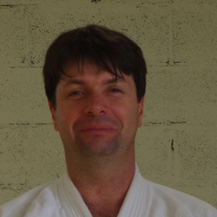

Enfants 9 - 11 ans
Samedi 9h30 - 10h15
80€

Grandfontaine, Dojo situé 16 rue du Moulin
Samedi 9h30 - 10h15
80€
Samedi 11h - 12h
90€
Samedi 10h15 - 11h
Tout adhérent de plus de 12 ans
(adultes admis)
Mercredi 19h15 - 20h45
100€
Christian LEMOINE
Président
Romain DÉOUX
Trésorier
Nicolas BLAND
Secrétaire

Julien HENRIET
Enseignant adultes-enfants, 5ème DAN, DE, membre du Comité Directeur de l'EPAM
L'Aïkido est un art martial traditionnel Japonais basé sur l'esquive et la coordination. Le but est de trouver une issue pacifique à tout conflit. L'Aïkidoka ne cherche pas particulièrement à vaincre, le statu-quo est une issue tout-à-fait acceptable à ses yeux !
Souplesse, coordination, respiration, placement, déplacements et recherche de puissance avec un minimum d'efforts sont autant d'aspects pratiqués durant les cours.
Dénué de compétition, cet art martial peut être pratiqué dès l'enfance et bien après l'âge de départ en retraite ! Chacune et chacun progresse à son propre rythme, sans stress !
Créée en 2012, l'association EPAM (Éducation Physique et Arts Martiaux) est à but non lucratif affiliée à la Fédération Française d'Aïkido, Aïkibudo et Associées (FFAAA).
Nous contacter : epam.aikido@gmail.com ou 06.82.05.22.95 (Christian)
Suivez-nous sur les réseaux sociaux et notamment sur notre page Facebook !